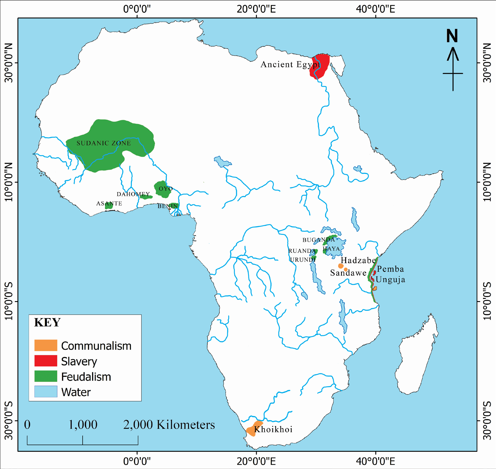

Under the Sheha or Diwani were tax collectors known as the Shakua. The taxes collected by the Shakua were usually in the form of millet and mangrove poles. People also paid feudal rent in the form of labour. They worked for Mwinyi Mkuu for a number of days in return for food and protection. Below the Shakua were some religious leaders known as Wavyale or Wazale. They performed various religious functions and duties such as leading prayers and burials. They also functioned as traditional healers, countered witchcraft and presided over rituals. Moreover, they blessed the land and economic activities in the villages. They survived by appropriating part of the surplus wealth produced by peasants. Figure 3.1 shows areas that practised various modes of production in pre-colonial Africa.
